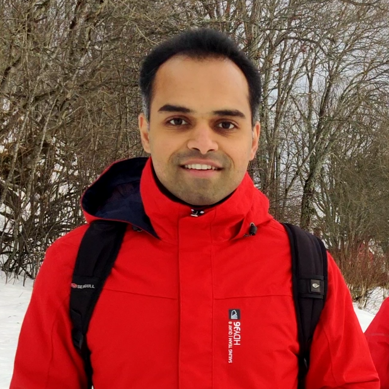

|
R. Praveen Kumar Jain
|
 |
Postdoctoral Researcher
Department of Engineering Cybernetics
Norwegian University of Science and Technology
Elektro D/B2, B145, Gløshaugen, 7491 Trondheim, Norway
E-mail: ravinder [dot] p [dot] k [dot] jain [at] ntnu [dot] no
Links: LinkedIn, Google Scholar, ResearchGate
Areas of Interest: Distributed Control and Estimation, Multi-agent Systems, Aerial and Marine Robotic Systems, Nonlinear Control, Model Predictive Control
|
About me:
I am a postdoctoral researcher working on marine robotics, control and machine learning.
I occasionally blog on Blogger about philosophy/opinions/world-view.
Research Experience:
Marie Sklodowska-Curie Researcher, December 2015 - September 2019
Faculty of Engineering (FEUP), University of Porto
Visiting Researcher, September 2017 - November 2017
Department of Engineering Cybernetics, Norwegian University of Science and Technology
Research Associate, July 2010 - June 2013
Center for Robotics Research, Nitte Meenakshi Institute of Technology
Education:
Doctor of Philosophy, Electrical and Computer Engineering, February 2016 - July 2019
Department of Electrical and Computer Engineering
Faculty of Engineering, University of Porto, Portugal
PhD Thesis: Decentralized Cooperative Control Methods for Multiple Mobile Robotic Vehicles
Master of Science, Systems and Control, September 2013 - August 2015
Delft Center for Systems and Control
Delft University of Technology, The Netherlands
MSc Thesis: Transportation of Cable Suspended Load using Unmanned Aerial Vehicles: A Real-time Model Predictive Control approach
Bachelor of Engineering, Electronics and Communication, September 2006 - June 2010
Nitte Meenakshi Institute of Technology, Bengaluru, India
Visvesvaraya Technological University, India
Bachelors Thesis: Forward and Inverse Kinematics, Trajectory Planning and Control of 5 DOF Articulated Robot for Pick and Place operation
|